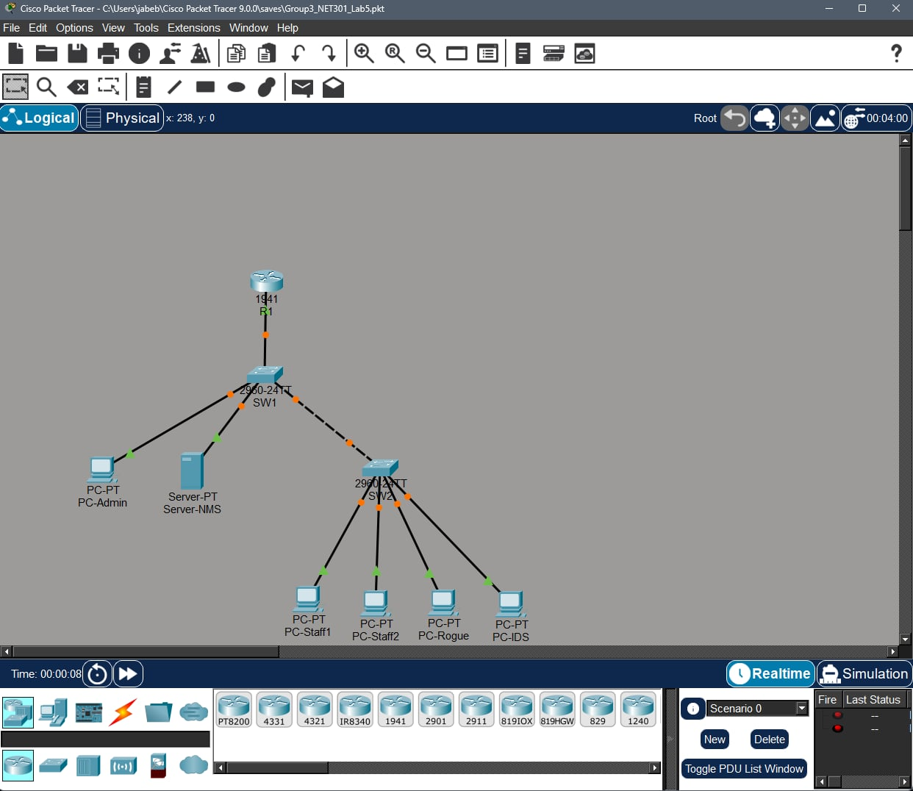
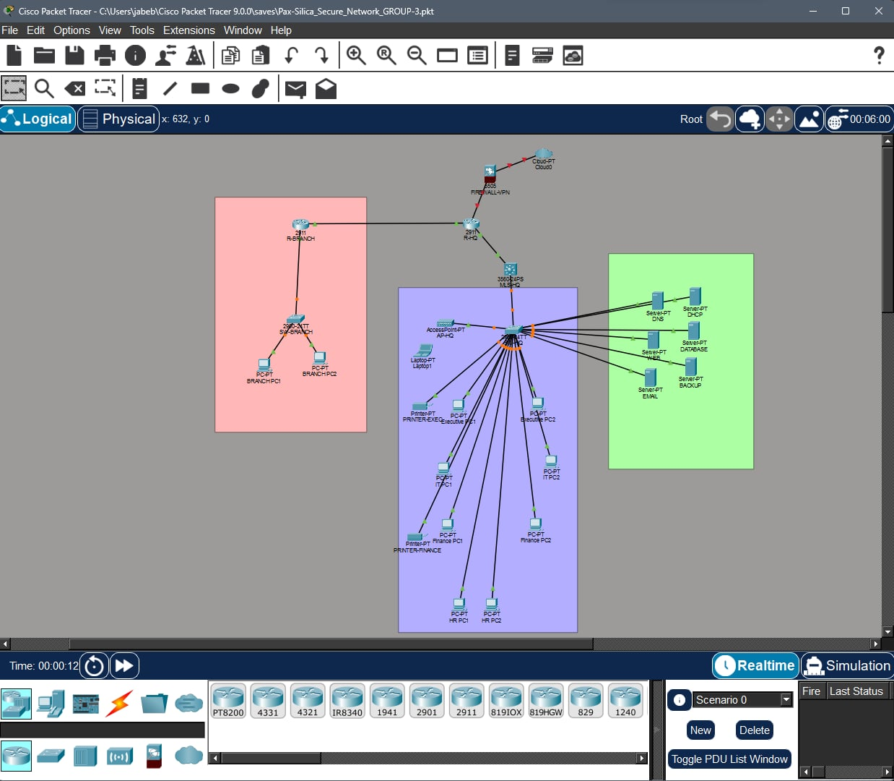

Cisco Packet Tracer Networking Lab
Hands-on networking exercises involving network configuration, VLANs, routing, and troubleshooting.
Overview
This ongoing set of academic networking exercises uses Cisco Packet Tracer as part of my BS Information Technology studies at City College of Calamba. The laboratory activities provide practical experience in configuring simulated networks, connecting devices, and troubleshooting connectivity issues.
Learning Objectives
The exercises focus on understanding how devices communicate across network segments, how routers and switches are configured, and how network connectivity problems can be identified and resolved.
Implementation
I perform network configuration and troubleshooting tasks in Cisco Packet Tracer. These include creating VLANs, configuring trunk links, enabling inter-VLAN communication, assigning IP addresses, and configuring network services and routing.
Technical Activities
Switching
- VLAN creation and configuration
- Switch trunking
Routing and IP Services
- Inter-VLAN routing
- Router configuration
- IP addressing and subnetting
- DHCP configuration
- Static routing
Network Administration and Security
- Network troubleshooting
- Network security configuration
Scope and Limitations
The activities are performed in a simulated environment using Cisco Packet Tracer. They are academic laboratory exercises and do not represent a production network deployment or a physical enterprise network installation.
My Contribution
I personally perform the networking configuration and troubleshooting exercises. My work includes configuring switches and routers, implementing VLANs, setting up routing and DHCP, assigning IP addresses, and applying network security configurations.
What I Learned
These exercises have strengthened my understanding of network segmentation, routing, IP addressing, and network services. They have also helped me develop a more systematic approach to troubleshooting connectivity problems and verifying network configurations.
Topology and Screenshots
Actual screenshots from my Cisco Packet Tracer networking laboratory exercises.

